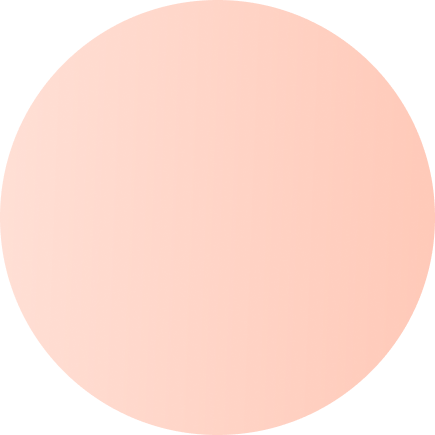
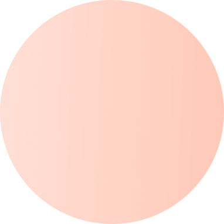
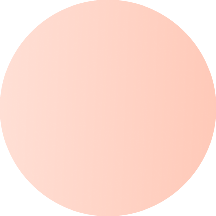
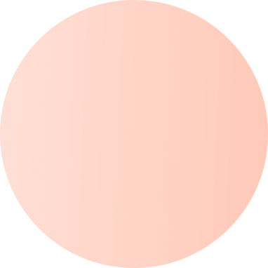

Адвокат Клименко Ірина Федорівна
У вас виникли питання в правових відносинах, і вам потрібна допомога кваліфікованого фахівця? Тут ви можете гарантовано отримати якісне професійне обслуговування, оперативні, законні та конфіденційні юридичні послуги за прийнятними цінами!
 



Про мене
Я, Клименко Ірина Федорівна , маю повну вищу юридичну освіту. В 2000 році закінчила Національну юридичну академію ім. Ярослава Мудрого у місті Харків З січня 1998 року по березень 2006 року працювала юристконсультом в органах Пенсійного фонду України 20 березня 2006 року отримала свідоцтво про право на зайняття адвокатською діяльністю за №480, яке видане Вінницької НДКА. З цього ж часу займаюсь адвокатською діяльністю Надаю громадянам юридичні консультації, роз`яснення з різних правових питань. Складаю документи з правових питань Включена до складу керівників стажування адвокатів Вінницької ради адвокатів Поважаю та ціную кожного Клієнта Жодна інформація, отримана мною під час надання правової допомоги Клієнту, не буде розголошена мною без згоди Клієнтa Ціную свій час та час мого Клієнта, тому всі зустрічі планую завчасно, за погодженням з Клієнтом, на конкретну дату та час. Витяг із реєстру адвокатів.